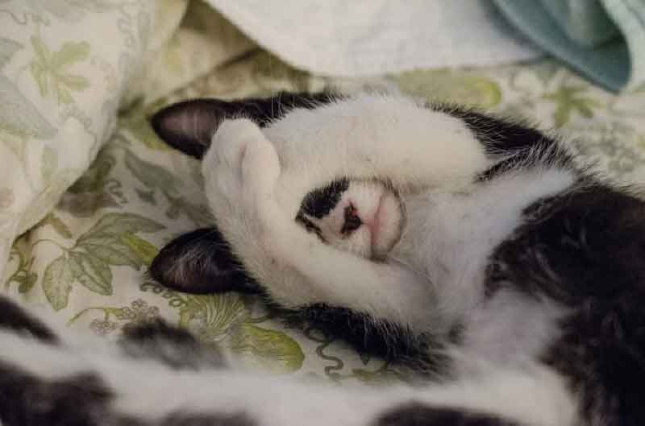

말캉말캉 귀여운 고양이 '젤리', 발바닥의 비밀!
핑크 핑크한 고양이 발바닥! 보기만 해도 젤리처럼 말캉말캉한 느낌이 드는 데요. 호기심에 만져보려고 다가가면 강한 펀치가 날아올 수 있습니다. 고양이 발바닥에는 신경이 민감하게 발달해 있고, 또 이것을 만지는 걸 무척 싫어하기 때문이죠. 그런데도 자꾸만 만지고 싶은 고양이 '젤리', 발바닥의 비밀을 알아볼게요!
"높은 곳을 오를 수 있는 이유"
고양이 발바닥 패드는 미끄럼을 방지합니다. 고양이가 높은 곳을 쉽게 오를 수 있는 이유이기도 하죠. 낮은 곳에서 높은 곳으로 점프가 쉽게 되는 이유도 땀이 찬 발바닥이 바닥과의 마찰로 높이 뛰어오를 수 있는 발판이 되기 때문입니다. 사람도 긴장하면 땀샘이 자극돼 손이나 발에 땀이 차듯이 고양이도 긴장하면 패드에서 땀이 나고, 적절한 땀은 습기를 머금고 미끄럼을 방지합니다. 게다가 고양이는 신체에 별도의 땀샘이 없어서 발바닥 패드로만 땀이 납니다.
"사뿐사뿐, 걸을 수 있는 이유"
고양이의 걸음걸이를 표현하자면, "사뿐사뿐"이라는 표현이 가장 어울릴 것입니다. 조용히, 또 가볍게, 빠르게, 이곳저곳을 옮겨 다닐 수 있는 데요. 고양이 발바닥 패드는 말랑말랑해 보이는 것처럼 폭신한 매트리스와 같은 역할을 합니다. 그래서 여기저기를 뛰어다니더라도 소리 없이 다닐 수 있죠. 조용히 사냥해야 할 때 도움이 됩니다.
"몸을 깨끗하게 할 수 있는 이유"
고양이 발바닥은 그루밍을 위한 빗으로 활용하기도 합니다. 보통 그루밍할 때 빗질의 수단이 됩니다. 고양이의 신체 부위의 넓은 부분은 직접 빗질로 관리해 줄 수 있지만, 고양이 입이나 머리는 직접 관리하기 어렵습니다. 그럴 때 고양이는 스스로 청결을 위해 젤리에 침을 묻히고 입가나 얼굴을 깨끗하게 정리할 수 있습니다.

"집사가 힐링할 수 있는 이유"
고양이 젤리는 보기만 해도 호기심을 자극합니다. 이 호기심을 이기지 못한 집사들이 자주 만지는 부위 중 하나인데요. 따뜻하면서 동시에 말랑말랑한 젤리를 만지고 있으면, 온갖 스트레스는 물론 정신적인 안정감까지 얻을 수 있다고 합니다. 대부분 고양이는 젤리 만지는 걸 싫어하지만, 한 대 맞을 각오로 만진다는 것! 게다가 발바닥에서 나는 고소한 꼬순내도 킬링 포인트죠.
"고양이 발바닥 패드, 젤리 만져도 되는 걸까?"
고양이 발바닥은 아주 민감해서 대부분 고양이는 만지는 것을 거부할 것입니다. 다만 일부 고양이는 부드럽게 만지거나 가볍게 마사지하듯 꾹꾹 눌러준다면 오히려 이 자극이 좋아 네 다리를 편하게 눕히고는 마사지를 즐기기도 합니다. 다만, 너무 센 자극을 준다면 날카로운 이빨을 드러내며 물릴 각오를 해야 한다는 점! 참고하시길 바랍니다. 고양이 발바닥의 비밀, 이제는 고양이 젤리를 이해할 수 있겠죠?
[출처] 말캉말캉 귀여운 고양이 '젤리', 발바닥의 비밀! ｜ 작성자 브런치